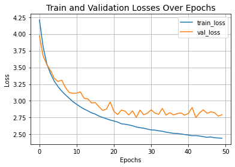

Image classification with EANet (External Attention Transformer)
Author: ZhiYong Chang
Date created: 2021/10/19
Last modified: 2023/07/18
Description: Image classification with a Transformer that leverages external attention.

Introduction
This example implements the EANet model for image classification, and demonstrates it on the CIFAR-100 dataset. EANet introduces a novel attention mechanism named external attention, based on two external, small, learnable, and shared memories, which can be implemented easily by simply using two cascaded linear layers and two normalization layers. It conveniently replaces self-attention as used in existing architectures. External attention has linear complexity, as it only implicitly considers the correlations between all samples.
Setup
import keras
from keras import layers
from keras import ops
import matplotlib.pyplot as plt
Prepare the data
num_classes = 100
input_shape = (32, 32, 3)
(x_train, y_train), (x_test, y_test) = keras.datasets.cifar100.load_data()
y_train = keras.utils.to_categorical(y_train, num_classes)
y_test = keras.utils.to_categorical(y_test, num_classes)
print(f"x_train shape: {x_train.shape} - y_train shape: {y_train.shape}")
print(f"x_test shape: {x_test.shape} - y_test shape: {y_test.shape}")
Downloading data from https://www.cs.toronto.edu/~kriz/cifar-100-python.tar.gz
169001437/169001437 ━━━━━━━━━━━━━━━━━━━━ 3s 0us/step
x_train shape: (50000, 32, 32, 3) - y_train shape: (50000, 100)
x_test shape: (10000, 32, 32, 3) - y_test shape: (10000, 100)
Configure the hyperparameters
weight_decay = 0.0001
learning_rate = 0.001
label_smoothing = 0.1
validation_split = 0.2
batch_size = 128
num_epochs = 50
patch_size = 2 # Size of the patches to be extracted from the input images.
num_patches = (input_shape[0] // patch_size) ** 2 # Number of patch
embedding_dim = 64 # Number of hidden units.
mlp_dim = 64
dim_coefficient = 4
num_heads = 4
attention_dropout = 0.2
projection_dropout = 0.2
num_transformer_blocks = 8 # Number of repetitions of the transformer layer
print(f"Patch size: {patch_size} X {patch_size} = {patch_size ** 2} ")
print(f"Patches per image: {num_patches}")
Patch size: 2 X 2 = 4
Patches per image: 256
Use data augmentation
data_augmentation = keras.Sequential(
[
layers.Normalization(),
layers.RandomFlip("horizontal"),
layers.RandomRotation(factor=0.1),
layers.RandomContrast(factor=0.1),
layers.RandomZoom(height_factor=0.2, width_factor=0.2),
],
name="data_augmentation",
)
# Compute the mean and the variance of the training data for normalization.
data_augmentation.layers[0].adapt(x_train)
Implement the patch extraction and encoding layer
class PatchExtract(layers.Layer):
def __init__(self, patch_size, **kwargs):
super().__init__(**kwargs)
self.patch_size = patch_size
def call(self, x):
B, C = ops.shape(x)[0], ops.shape(x)[-1]
x = ops.image.extract_patches(x, self.patch_size)
x = ops.reshape(x, (B, -1, self.patch_size * self.patch_size * C))
return x
class PatchEmbedding(layers.Layer):
def __init__(self, num_patch, embed_dim, **kwargs):
super().__init__(**kwargs)
self.num_patch = num_patch
self.proj = layers.Dense(embed_dim)
self.pos_embed = layers.Embedding(input_dim=num_patch, output_dim=embed_dim)
def call(self, patch):
pos = ops.arange(start=0, stop=self.num_patch, step=1)
return self.proj(patch) + self.pos_embed(pos)
Implement the external attention block
def external_attention(
x,
dim,
num_heads,
dim_coefficient=4,
attention_dropout=0,
projection_dropout=0,
):
_, num_patch, channel = x.shape
assert dim % num_heads == 0
num_heads = num_heads * dim_coefficient
x = layers.Dense(dim * dim_coefficient)(x)
# create tensor [batch_size, num_patches, num_heads, dim*dim_coefficient//num_heads]
x = ops.reshape(x, (-1, num_patch, num_heads, dim * dim_coefficient // num_heads))
x = ops.transpose(x, axes=[0, 2, 1, 3])
# a linear layer M_k
attn = layers.Dense(dim // dim_coefficient)(x)
# normalize attention map
attn = layers.Softmax(axis=2)(attn)
# dobule-normalization
attn = layers.Lambda(
lambda attn: ops.divide(
attn,
ops.convert_to_tensor(1e-9) + ops.sum(attn, axis=-1, keepdims=True),
)
)(attn)
attn = layers.Dropout(attention_dropout)(attn)
# a linear layer M_v
x = layers.Dense(dim * dim_coefficient // num_heads)(attn)
x = ops.transpose(x, axes=[0, 2, 1, 3])
x = ops.reshape(x, [-1, num_patch, dim * dim_coefficient])
# a linear layer to project original dim
x = layers.Dense(dim)(x)
x = layers.Dropout(projection_dropout)(x)
return x
Implement the MLP block
def mlp(x, embedding_dim, mlp_dim, drop_rate=0.2):
x = layers.Dense(mlp_dim, activation=ops.gelu)(x)
x = layers.Dropout(drop_rate)(x)
x = layers.Dense(embedding_dim)(x)
x = layers.Dropout(drop_rate)(x)
return x
Implement the Transformer block
def transformer_encoder(
x,
embedding_dim,
mlp_dim,
num_heads,
dim_coefficient,
attention_dropout,
projection_dropout,
attention_type="external_attention",
):
residual_1 = x
x = layers.LayerNormalization(epsilon=1e-5)(x)
if attention_type == "external_attention":
x = external_attention(
x,
embedding_dim,
num_heads,
dim_coefficient,
attention_dropout,
projection_dropout,
)
elif attention_type == "self_attention":
x = layers.MultiHeadAttention(
num_heads=num_heads,
key_dim=embedding_dim,
dropout=attention_dropout,
)(x, x)
x = layers.add([x, residual_1])
residual_2 = x
x = layers.LayerNormalization(epsilon=1e-5)(x)
x = mlp(x, embedding_dim, mlp_dim)
x = layers.add([x, residual_2])
return x
Implement the EANet model
The EANet model leverages external attention.
The computational complexity of traditional self attention is O(d * N ** 2),
where d is the embedding size, and N is the number of patch.
the authors find that most pixels are closely related to just a few other
pixels, and an N-to-N attention matrix may be redundant.
So, they propose as an alternative an external
attention module where the computational complexity of external attention is O(d * S * N).
As d and S are hyper-parameters,
the proposed algorithm is linear in the number of pixels. In fact, this is equivalent
to a drop patch operation, because a lot of information contained in a patch
in an image is redundant and unimportant.
def get_model(attention_type="external_attention"):
inputs = layers.Input(shape=input_shape)
# Image augment
x = data_augmentation(inputs)
# Extract patches.
x = PatchExtract(patch_size)(x)
# Create patch embedding.
x = PatchEmbedding(num_patches, embedding_dim)(x)
# Create Transformer block.
for _ in range(num_transformer_blocks):
x = transformer_encoder(
x,
embedding_dim,
mlp_dim,
num_heads,
dim_coefficient,
attention_dropout,
projection_dropout,
attention_type,
)
x = layers.GlobalAveragePooling1D()(x)
outputs = layers.Dense(num_classes, activation="softmax")(x)
model = keras.Model(inputs=inputs, outputs=outputs)
return model
Train on CIFAR-100
model = get_model(attention_type="external_attention")
model.compile(
loss=keras.losses.CategoricalCrossentropy(label_smoothing=label_smoothing),
optimizer=keras.optimizers.AdamW(
learning_rate=learning_rate, weight_decay=weight_decay
),
metrics=[
keras.metrics.CategoricalAccuracy(name="accuracy"),
keras.metrics.TopKCategoricalAccuracy(5, name="top-5-accuracy"),
],
)
history = model.fit(
x_train,
y_train,
batch_size=batch_size,
epochs=num_epochs,
validation_split=validation_split,
)
Epoch 1/50
313/313 ━━━━━━━━━━━━━━━━━━━━ 56s 101ms/step - accuracy: 0.0367 - loss: 4.5081 - top-5-accuracy: 0.1369 - val_accuracy: 0.0659 - val_loss: 4.5736 - val_top-5-accuracy: 0.2277
Epoch 2/50
313/313 ━━━━━━━━━━━━━━━━━━━━ 31s 97ms/step - accuracy: 0.0970 - loss: 4.0453 - top-5-accuracy: 0.2965 - val_accuracy: 0.0624 - val_loss: 5.2273 - val_top-5-accuracy: 0.2178
Epoch 3/50
313/313 ━━━━━━━━━━━━━━━━━━━━ 30s 96ms/step - accuracy: 0.1287 - loss: 3.8706 - top-5-accuracy: 0.3621 - val_accuracy: 0.0690 - val_loss: 5.9141 - val_top-5-accuracy: 0.2342
Epoch 4/50
313/313 ━━━━━━━━━━━━━━━━━━━━ 30s 97ms/step - accuracy: 0.1569 - loss: 3.7600 - top-5-accuracy: 0.4071 - val_accuracy: 0.0806 - val_loss: 5.7599 - val_top-5-accuracy: 0.2510
Epoch 5/50
313/313 ━━━━━━━━━━━━━━━━━━━━ 30s 96ms/step - accuracy: 0.1839 - loss: 3.6534 - top-5-accuracy: 0.4437 - val_accuracy: 0.0954 - val_loss: 5.6725 - val_top-5-accuracy: 0.2772
Epoch 6/50
313/313 ━━━━━━━━━━━━━━━━━━━━ 30s 97ms/step - accuracy: 0.1983 - loss: 3.5784 - top-5-accuracy: 0.4643 - val_accuracy: 0.1050 - val_loss: 5.5299 - val_top-5-accuracy: 0.2898
Epoch 7/50
313/313 ━━━━━━━━━━━━━━━━━━━━ 30s 96ms/step - accuracy: 0.2142 - loss: 3.5126 - top-5-accuracy: 0.4879 - val_accuracy: 0.1108 - val_loss: 5.5076 - val_top-5-accuracy: 0.2995
Epoch 8/50
313/313 ━━━━━━━━━━━━━━━━━━━━ 31s 98ms/step - accuracy: 0.2277 - loss: 3.4624 - top-5-accuracy: 0.5044 - val_accuracy: 0.1157 - val_loss: 5.3608 - val_top-5-accuracy: 0.3065
Epoch 9/50
313/313 ━━━━━━━━━━━━━━━━━━━━ 30s 96ms/step - accuracy: 0.2360 - loss: 3.4188 - top-5-accuracy: 0.5191 - val_accuracy: 0.1200 - val_loss: 5.4690 - val_top-5-accuracy: 0.3106
Epoch 10/50
313/313 ━━━━━━━━━━━━━━━━━━━━ 30s 97ms/step - accuracy: 0.2444 - loss: 3.3684 - top-5-accuracy: 0.5387 - val_accuracy: 0.1286 - val_loss: 5.1677 - val_top-5-accuracy: 0.3263
Epoch 11/50
313/313 ━━━━━━━━━━━━━━━━━━━━ 30s 96ms/step - accuracy: 0.2532 - loss: 3.3380 - top-5-accuracy: 0.5425 - val_accuracy: 0.1161 - val_loss: 5.5990 - val_top-5-accuracy: 0.3166
Epoch 12/50
313/313 ━━━━━━━━━━━━━━━━━━━━ 30s 96ms/step - accuracy: 0.2646 - loss: 3.2978 - top-5-accuracy: 0.5537 - val_accuracy: 0.1244 - val_loss: 5.5238 - val_top-5-accuracy: 0.3181
Epoch 13/50
313/313 ━━━━━━━━━━━━━━━━━━━━ 30s 96ms/step - accuracy: 0.2722 - loss: 3.2706 - top-5-accuracy: 0.5663 - val_accuracy: 0.1304 - val_loss: 5.2244 - val_top-5-accuracy: 0.3392
Epoch 14/50
313/313 ━━━━━━━━━━━━━━━━━━━━ 30s 97ms/step - accuracy: 0.2773 - loss: 3.2406 - top-5-accuracy: 0.5707 - val_accuracy: 0.1358 - val_loss: 5.2482 - val_top-5-accuracy: 0.3431
Epoch 15/50
313/313 ━━━━━━━━━━━━━━━━━━━━ 30s 96ms/step - accuracy: 0.2839 - loss: 3.2050 - top-5-accuracy: 0.5855 - val_accuracy: 0.1288 - val_loss: 5.3406 - val_top-5-accuracy: 0.3388
Epoch 16/50
313/313 ━━━━━━━━━━━━━━━━━━━━ 30s 97ms/step - accuracy: 0.2881 - loss: 3.1856 - top-5-accuracy: 0.5918 - val_accuracy: 0.1402 - val_loss: 5.2058 - val_top-5-accuracy: 0.3502
Epoch 17/50
313/313 ━━━━━━━━━━━━━━━━━━━━ 30s 96ms/step - accuracy: 0.3006 - loss: 3.1596 - top-5-accuracy: 0.5992 - val_accuracy: 0.1410 - val_loss: 5.2260 - val_top-5-accuracy: 0.3476
Epoch 18/50
313/313 ━━━━━━━━━━━━━━━━━━━━ 30s 97ms/step - accuracy: 0.3047 - loss: 3.1334 - top-5-accuracy: 0.6068 - val_accuracy: 0.1348 - val_loss: 5.2521 - val_top-5-accuracy: 0.3415
Epoch 19/50
313/313 ━━━━━━━━━━━━━━━━━━━━ 30s 96ms/step - accuracy: 0.3058 - loss: 3.1203 - top-5-accuracy: 0.6125 - val_accuracy: 0.1433 - val_loss: 5.1966 - val_top-5-accuracy: 0.3570
Epoch 20/50
313/313 ━━━━━━━━━━━━━━━━━━━━ 30s 96ms/step - accuracy: 0.3105 - loss: 3.0968 - top-5-accuracy: 0.6141 - val_accuracy: 0.1404 - val_loss: 5.3623 - val_top-5-accuracy: 0.3497
Epoch 21/50
313/313 ━━━━━━━━━━━━━━━━━━━━ 30s 96ms/step - accuracy: 0.3161 - loss: 3.0748 - top-5-accuracy: 0.6247 - val_accuracy: 0.1486 - val_loss: 5.0754 - val_top-5-accuracy: 0.3740
Epoch 22/50
313/313 ━━━━━━━━━━━━━━━━━━━━ 31s 98ms/step - accuracy: 0.3233 - loss: 3.0536 - top-5-accuracy: 0.6288 - val_accuracy: 0.1472 - val_loss: 5.3110 - val_top-5-accuracy: 0.3545
Epoch 23/50
313/313 ━━━━━━━━━━━━━━━━━━━━ 31s 98ms/step - accuracy: 0.3281 - loss: 3.0272 - top-5-accuracy: 0.6387 - val_accuracy: 0.1408 - val_loss: 5.4392 - val_top-5-accuracy: 0.3524
Epoch 24/50
313/313 ━━━━━━━━━━━━━━━━━━━━ 31s 98ms/step - accuracy: 0.3363 - loss: 3.0089 - top-5-accuracy: 0.6389 - val_accuracy: 0.1395 - val_loss: 5.3579 - val_top-5-accuracy: 0.3555
Epoch 25/50
313/313 ━━━━━━━━━━━━━━━━━━━━ 30s 97ms/step - accuracy: 0.3386 - loss: 2.9958 - top-5-accuracy: 0.6427 - val_accuracy: 0.1550 - val_loss: 5.1783 - val_top-5-accuracy: 0.3655
Epoch 26/50
313/313 ━━━━━━━━━━━━━━━━━━━━ 31s 98ms/step - accuracy: 0.3474 - loss: 2.9824 - top-5-accuracy: 0.6496 - val_accuracy: 0.1448 - val_loss: 5.3971 - val_top-5-accuracy: 0.3596
Epoch 27/50
313/313 ━━━━━━━━━━━━━━━━━━━━ 31s 98ms/step - accuracy: 0.3500 - loss: 2.9647 - top-5-accuracy: 0.6532 - val_accuracy: 0.1519 - val_loss: 5.1895 - val_top-5-accuracy: 0.3665
Epoch 28/50
313/313 ━━━━━━━━━━━━━━━━━━━━ 31s 98ms/step - accuracy: 0.3561 - loss: 2.9414 - top-5-accuracy: 0.6604 - val_accuracy: 0.1470 - val_loss: 5.4482 - val_top-5-accuracy: 0.3600
Epoch 29/50
313/313 ━━━━━━━━━━━━━━━━━━━━ 30s 97ms/step - accuracy: 0.3572 - loss: 2.9410 - top-5-accuracy: 0.6593 - val_accuracy: 0.1572 - val_loss: 5.1866 - val_top-5-accuracy: 0.3795
Epoch 30/50
313/313 ━━━━━━━━━━━━━━━━━━━━ 31s 100ms/step - accuracy: 0.3561 - loss: 2.9263 - top-5-accuracy: 0.6670 - val_accuracy: 0.1638 - val_loss: 5.0637 - val_top-5-accuracy: 0.3934
Epoch 31/50
313/313 ━━━━━━━━━━━━━━━━━━━━ 30s 97ms/step - accuracy: 0.3621 - loss: 2.9050 - top-5-accuracy: 0.6730 - val_accuracy: 0.1589 - val_loss: 5.2504 - val_top-5-accuracy: 0.3835
Epoch 32/50
313/313 ━━━━━━━━━━━━━━━━━━━━ 30s 96ms/step - accuracy: 0.3675 - loss: 2.8898 - top-5-accuracy: 0.6754 - val_accuracy: 0.1690 - val_loss: 5.0613 - val_top-5-accuracy: 0.3950
Epoch 33/50
313/313 ━━━━━━━━━━━━━━━━━━━━ 30s 97ms/step - accuracy: 0.3771 - loss: 2.8710 - top-5-accuracy: 0.6784 - val_accuracy: 0.1596 - val_loss: 5.1941 - val_top-5-accuracy: 0.3784
Epoch 34/50
313/313 ━━━━━━━━━━━━━━━━━━━━ 30s 97ms/step - accuracy: 0.3797 - loss: 2.8536 - top-5-accuracy: 0.6880 - val_accuracy: 0.1686 - val_loss: 5.1522 - val_top-5-accuracy: 0.3879
Epoch 35/50
313/313 ━━━━━━━━━━━━━━━━━━━━ 30s 97ms/step - accuracy: 0.3792 - loss: 2.8504 - top-5-accuracy: 0.6871 - val_accuracy: 0.1525 - val_loss: 5.2875 - val_top-5-accuracy: 0.3735
Epoch 36/50
313/313 ━━━━━━━━━━━━━━━━━━━━ 30s 96ms/step - accuracy: 0.3868 - loss: 2.8278 - top-5-accuracy: 0.6950 - val_accuracy: 0.1573 - val_loss: 5.2148 - val_top-5-accuracy: 0.3797
Epoch 37/50
313/313 ━━━━━━━━━━━━━━━━━━━━ 30s 97ms/step - accuracy: 0.3869 - loss: 2.8129 - top-5-accuracy: 0.6973 - val_accuracy: 0.1562 - val_loss: 5.4344 - val_top-5-accuracy: 0.3646
Epoch 38/50
313/313 ━━━━━━━━━━━━━━━━━━━━ 30s 96ms/step - accuracy: 0.3866 - loss: 2.8129 - top-5-accuracy: 0.6977 - val_accuracy: 0.1610 - val_loss: 5.2807 - val_top-5-accuracy: 0.3772
Epoch 39/50
313/313 ━━━━━━━━━━━━━━━━━━━━ 30s 96ms/step - accuracy: 0.3934 - loss: 2.7990 - top-5-accuracy: 0.7006 - val_accuracy: 0.1681 - val_loss: 5.0741 - val_top-5-accuracy: 0.3967
Epoch 40/50
313/313 ━━━━━━━━━━━━━━━━━━━━ 30s 96ms/step - accuracy: 0.3947 - loss: 2.7863 - top-5-accuracy: 0.7065 - val_accuracy: 0.1612 - val_loss: 5.1039 - val_top-5-accuracy: 0.3885
Epoch 41/50
313/313 ━━━━━━━━━━━━━━━━━━━━ 30s 97ms/step - accuracy: 0.4030 - loss: 2.7687 - top-5-accuracy: 0.7092 - val_accuracy: 0.1592 - val_loss: 5.1138 - val_top-5-accuracy: 0.3837
Epoch 42/50
313/313 ━━━━━━━━━━━━━━━━━━━━ 30s 96ms/step - accuracy: 0.4013 - loss: 2.7706 - top-5-accuracy: 0.7071 - val_accuracy: 0.1718 - val_loss: 5.1391 - val_top-5-accuracy: 0.3938
Epoch 43/50
313/313 ━━━━━━━━━━━━━━━━━━━━ 30s 97ms/step - accuracy: 0.4062 - loss: 2.7569 - top-5-accuracy: 0.7137 - val_accuracy: 0.1593 - val_loss: 5.3004 - val_top-5-accuracy: 0.3781
Epoch 44/50
313/313 ━━━━━━━━━━━━━━━━━━━━ 30s 97ms/step - accuracy: 0.4109 - loss: 2.7429 - top-5-accuracy: 0.7129 - val_accuracy: 0.1823 - val_loss: 5.0221 - val_top-5-accuracy: 0.4038
Epoch 45/50
313/313 ━━━━━━━━━━━━━━━━━━━━ 30s 96ms/step - accuracy: 0.4074 - loss: 2.7312 - top-5-accuracy: 0.7212 - val_accuracy: 0.1706 - val_loss: 5.1799 - val_top-5-accuracy: 0.3898
Epoch 46/50
313/313 ━━━━━━━━━━━━━━━━━━━━ 30s 95ms/step - accuracy: 0.4175 - loss: 2.7121 - top-5-accuracy: 0.7202 - val_accuracy: 0.1701 - val_loss: 5.1674 - val_top-5-accuracy: 0.3910
Epoch 47/50
313/313 ━━━━━━━━━━━━━━━━━━━━ 31s 101ms/step - accuracy: 0.4187 - loss: 2.7178 - top-5-accuracy: 0.7227 - val_accuracy: 0.1764 - val_loss: 5.0161 - val_top-5-accuracy: 0.4027
Epoch 48/50
313/313 ━━━━━━━━━━━━━━━━━━━━ 30s 96ms/step - accuracy: 0.4180 - loss: 2.7045 - top-5-accuracy: 0.7246 - val_accuracy: 0.1709 - val_loss: 5.0650 - val_top-5-accuracy: 0.3907
Epoch 49/50
313/313 ━━━━━━━━━━━━━━━━━━━━ 30s 96ms/step - accuracy: 0.4264 - loss: 2.6857 - top-5-accuracy: 0.7276 - val_accuracy: 0.1591 - val_loss: 5.3416 - val_top-5-accuracy: 0.3732
Epoch 50/50
313/313 ━━━━━━━━━━━━━━━━━━━━ 30s 96ms/step - accuracy: 0.4245 - loss: 2.6878 - top-5-accuracy: 0.7271 - val_accuracy: 0.1778 - val_loss: 5.1093 - val_top-5-accuracy: 0.3987
Let's visualize the training progress of the model.
plt.plot(history.history["loss"], label="train_loss")
plt.plot(history.history["val_loss"], label="val_loss")
plt.xlabel("Epochs")
plt.ylabel("Loss")
plt.title("Train and Validation Losses Over Epochs", fontsize=14)
plt.legend()
plt.grid()
plt.show()

Let's display the final results of the test on CIFAR-100.
loss, accuracy, top_5_accuracy = model.evaluate(x_test, y_test)
print(f"Test loss: {round(loss, 2)}")
print(f"Test accuracy: {round(accuracy * 100, 2)}%")
print(f"Test top 5 accuracy: {round(top_5_accuracy * 100, 2)}%")
313/313 ━━━━━━━━━━━━━━━━━━━━ 3s 9ms/step - accuracy: 0.1774 - loss: 5.0871 - top-5-accuracy: 0.3963
Test loss: 5.15
Test accuracy: 17.26%
Test top 5 accuracy: 38.94%
EANet just replaces self attention in Vit with external attention. The traditional Vit achieved a ~73% test top-5 accuracy and ~41 top-1 accuracy after training 50 epochs, but with 0.6M parameters. Under the same experimental environment and the same hyperparameters, The EANet model we just trained has just 0.3M parameters, and it gets us to ~73% test top-5 accuracy and ~43% top-1 accuracy. This fully demonstrates the effectiveness of external attention.
We only show the training process of EANet, you can train Vit under the same experimental conditions and observe the test results.